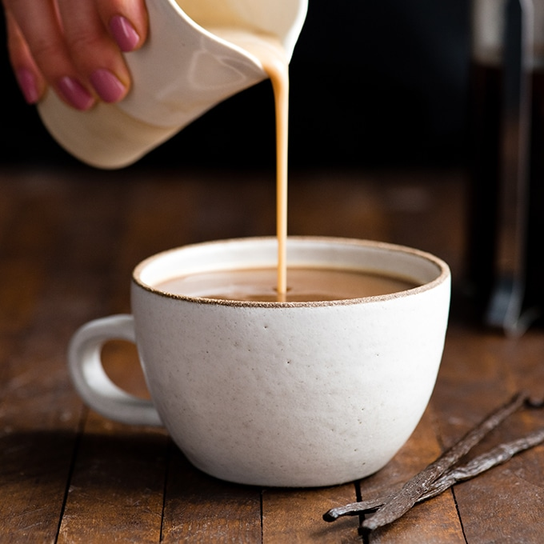
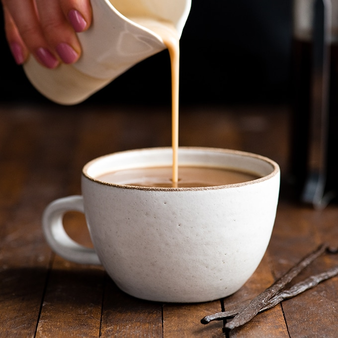

Kaffe
 

Kaffe
Verdensproduksjon av råkaffe var i 2103 omtrent ni millioner tonn. Brasil er klart verdens største kaffeprodusent. Noorge importerer årlig rundt 40 000 tonn kaffe.
Forbruket av kaffe er større i de nordiske land enn i andre land i Europa. I Norge er forbruket gjennomsnittlig knapt 10 kg per person per år.